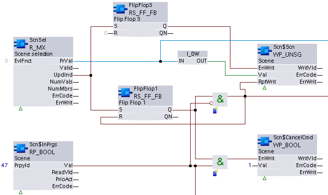

WP_BOOL: Write boolean property
WP_BOOL writes to a specified, writable property or array element of datatype Boolean in the data point. Attempts to write to a read-only property or array element will result in a rejected write and an error message.
Compatible data points:
- Any BACnet data point with a writable property or array element of datatype Boolean.
Refer to data point objects for a detailed description of the BACnet data points.
Pin description (inputs)
BaObjRef | |
|---|---|
BA-Object reference Structure [BaObjRef] defines a bound connection between XFB and BACnet object. The binding occurs automatically. Manual configuration attempts are not necessary and can result in system errors. | |
DeviceId | Device identifier Double word (default value: 16#3FFFFF) [DeviceId] comprises object type and object instance in a single identifier. It is used to identify device object: local or remote. Local device object could also be identified by value 16#3FFFFF. |
ObjectId | Object identifier Double word (default value: 16#3FFFFF) [ObjectId] comprises object type and object instance in a single identifier. It is used to identify object within a device. |
ItemId | Item identifier Integer (default value: -1) [ItemId] represents an item index in the functional view node object, which references the BACnet object. [ObjectId] and [ItemId] together define an indirect access reference to the BACnet object. Value -1 indicates that direct binding is used. |
Val |
|---|
Value Boolean (default value: False) A calculated value (or a fixed value, that can be set for design needs) assigned by the control program to update the property or array element. [Val] will be written if:
|
RptWrit | |
|---|---|
Repeat write Boolean (default value: False) [RptWrit] forces a write of [Val] to the property or array element. The write operation is repeated with each program cycle for as long as [RptWrit] is True. [RptWrit] will typically be calculated and set by the control program. Note | |
1 (True) | If [EnWrit] is True, [Val] is written to the property or array element with each program cycle for as long as [RptWrit] is True. |
0 (False) | No action. |
EnWrit |
|---|
Enable write Boolean (default value: True) When True, [EnWrit] enables values from inputs [Val] and [SetValid] to be written to the calculated value object. [Val] and [SetValid] will be written if:
|
PrpyId |
|---|
Property identifier Integer (default value: 0) The parameterized BACnet Id number of the property being written. [PrpyId] can be set to any writeable property in the BACnet object. |
ArrayIdx | |
|---|---|
Array index Integer (default value: -1) Index number of the array element to be accessed by the XFB. [ArrayIdx] represents an optional parameterized input for specifying access to an element of a property of datatype BACnetARRAY or BACnetPriorityArray. [ArrayIdx] cannot be changed during runtime. | |
= -1 | [ArrayIdx] not used. |
= 0 | (0) specifies the length of the array of the referenced property. Since it is not a function of the control program to write to this field, requests to [ArrayIdx] 0 will be rejected by the XFB. |
> 0 | Parameterized value. |
Pin description (outputs)
WritVld | |
|---|---|
Write valid Boolean (default value: False) An indication of whether the last write attempt was successful. [WritVld] maintains the last write state (True or False) until reset by the next write attempt. | |
1 (True) | The last write attempt was successful. |
0 (False) | The last write attempt was unsuccessful. |
ErrCode | |
|---|---|
Error code indication Integer (default value: 20) The status of the last performance of the XFB read operation. | |
= 0 | No error. |
> 0 | Error, see XFB error codes. |
ErrWrit | |
|---|---|
Error while writing Integer (default value: 20) The status of the last execution of the XFB write operation. | |
= 0 | No error. |
> 0 | Error, see XFB error codes. |
Use case examples
NOTICE

Note
Graphics reflect examples of XFB implementations; See ABT for current examples of CFC.
WP_BOOL: Example taken from the shared function CHT{RScene01}.
Due to graphical size limitations, function blocks may be missing or shown more closely grouped than is typical.
